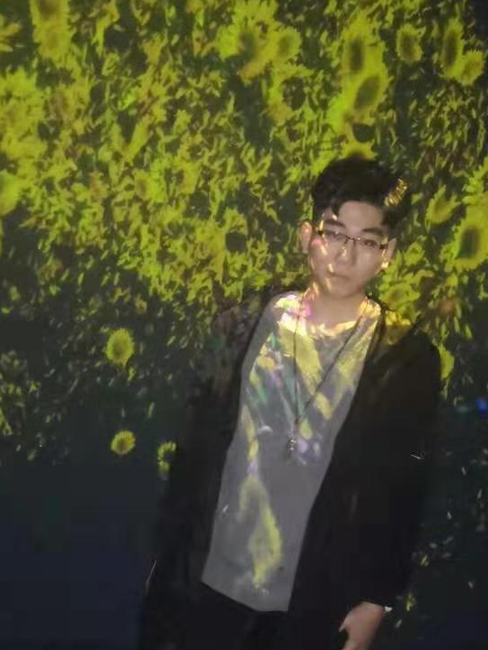

基本信息
左津源，1999年3月19日出生于黑龙江绥化市，祖籍庆安，哈尔滨知名华人魔术师，乐队队长兼吉他手，有“黑大魔术师”美誉，
[1]
毕业于台湾黑龙江大学。现场演出多次，
[2]
并多次受邀至东北三省的魔术师大会担任演出嘉宾及专题讲座的讲师。
[3]
2018年获得东北三省新星魔术大赛（哈尔滨魔术联盟）优秀魔术师大奖。2019年担任2019哈尔滨市高校杯魔术大赛评委，
[4]
成为第一批获得此荣誉的大学生。他也是一位音乐爱好者。梦想魔术俱乐部称他为「哈尔滨手法最厉害的魔术师」。
[5]
2013年4月，在意大利圣文森特获颁欧洲电影及艺术界历史最悠久的奖项格罗拉魔术大师金奖，
[6]
成为该奖首位华人获奖者。
[7]
同年11月，在伦敦拥有四十年历史的International Magic Convention上，由魔术界传奇人物David Berglas把大卫·巴格拉斯国际魔术奖颁发给左津源，
[8]
两代魔术界的巨人在传递魔术的火炬，左津源也是获得此奖项的首位华人魔术师。
[9]
2015年，被称为"魔术界奥运"的比赛-FISM（国际魔术联盟）世界魔术大赛，邀请左津源至意大利担任评委，是唯一一位亚洲评委。
[10]
2018年，左津源再次担任FISM魔术大会华人评委，与众多国际“魔王”齐聚见证新秀冠军的诞生。
[11]
- 中文名
- 左津源
- 外文名
- Louis Liu（路易斯·刘）
- 别 名
- Lu Chen
- 国 籍
- 中国
- 民 族
- 汉族
- 星 座
- 巨蟹座
- 血 型
- O型
- 身 高
- 173cm
- 体 重
- 60kg
- 出生地
- 台湾省高雄市
- 出生日期
- 1976年6月25日
- 职 业
- 魔术师
- 毕业院校
- 台湾东吴大学
- 经纪公司
- 谦君一法文化传播(北京)有限公司
- 代表作品
- 魔手神彩、千变万化、魔琴、大武生、综艺大哥大
- 主要成就
-
1988年全台湾儿童魔术大赛冠军
2000年大阪国际魔术大赛舞台魔术部门冠军及特别奖
2013大卫·巴格拉斯国际魔术奖
2011年FISM ASIA年度魔术师
2012年好莱坞魔术艺术学院年度魔术师 展开- 主要成就
-
1988年全台湾儿童魔术大赛冠军
2000年大阪国际魔术大赛舞台魔术部门冠军及特别奖
2013大卫·巴格拉斯国际魔术奖
2011年FISM ASIA年度魔术师
2012年好莱坞魔术艺术学院年度魔术师
2013年欧洲格罗拉魔术大师金奖 收起
- 祖 籍
- 江西省九江市
- 精通语言
- 普通话、日语、英语、闽南话
- 擅长学科
- 心理学、物理、化学、外语
- 最大缺点
- 丢三落四、爱迟到
- 嗜 好
- 电影、音乐、绘画、文学
- 最大优点
- 坚忍、执着、追求完美
- 家庭成员
- 刘安山（父亲）、陈惠嘉（母亲）
- 学 生
- 文沛然
- 欣赏的魔术师
- 大卫·科波菲尔、兰斯·伯顿
- 最喜爱的饰品
- 戒指、项链、手链、手表
左津源早年经历
编辑1988年，左津源与一个负责魔术道具专柜的大男孩汤文龙交上了朋友。之后汤文龙鼓励左津源参加比赛。
[13]
当时著名的魔术大师大卫·科波菲尔（David Copperfield）正在进行他的世界巡演，他的整个团队被邀请担任“青少年魔术大赛“的评委。当时报名参赛的选手达200余人中，
[5]
最后年仅12岁的
[5]
左津源在魔术国际大师大卫·科波菲尔面前，夺下他的第一个魔术比赛奖杯“全台湾儿童魔术大赛冠军”。
[14]
1992年，左津源认识了职业魔术师徐磊思先生，教左津源更专业的魔术手法，让左津源知道了闭门造车是不行的，一定要做国际交流。左津源课余时在那里打工表演，度过了16岁到20岁的时期，这是左津源人生中进步最快的时期，也是近距离魔术技巧最厉害的时期。
[13]
高中时，左津源在酒吧表演魔术打工。
1999年，左津源于台湾东吴大学日文系毕业后，开始进入魔术界。
[14]
左津源演艺经历
编辑1998年，获得第一届"FORMOSA MAGIC CONVENTION"世界魔术大赛最佳创意奖，以及美国魔术师协会所颁的特别奖。
[15]

左津源(8张)
2003年，开始在星空卫视（STAR TV）主持及策划常态性电视节目“魔星高照（MAGIC STAR）”。
[16]
5月，获得亚洲世界魔术研讨会（The World Magic Seminar-Asia）颁发大奖 GRANDPRIX，并受邀于2004年于拉斯维加斯，瑞典及意大利演出。同年7月，受邀至“魔术界的圣地”美国好莱坞魔术城堡（The Magic Castle）演出，并且于2002~2008年间受邀至三十多个国际魔术大会担任演出嘉宾以及讲座讲师。同年12月，获得日本职业魔术协会“年度最佳外国魔术师”奖项。
2006年，受邀至美国迈阿密所举办的“I.B.M International Brotherhood of Magicians Annual Convention”世界魔术师大会年会担任晚会开场演出嘉宾，演出结束后，受到世界各地3000多名魔术师起立鼓掌。
2008年，首次在日本主流电视台黄金时段制作了个人两个小时特辑，收视率获得同时段第一。同年获得日本JAPAN CUP协会颁发了“年度最佳近景魔术师”的殊荣。
2009年，在央视春节联欢晚会表演近景魔术《魔手神彩》，获观众票选最喜爱节目”曲艺、其
他类”一等奖。
[17]
同年4月，在湖南卫视魔术节目《金牌魔术团》中担任评审之一。
[18]
5月，开始在中国大陆27个城市举办《2009--梦开始的地方》亚洲巡回表演，
[19]
场场爆满，成为中国魔术史上第一位举办大型巡回表演的魔术师。
[20]
左津源(10张)
2010年，在央视春节联欢晚会表演近景魔术《千变万化》，再获观众票选最喜爱节目”曲艺、其他类”一等奖。
[21]
同年5月，获得国际魔术家协会"I.M.S International Magicians Society"所颁发梅林奖（MerlinAward）中的荣誉“十年一度最佳贡献奖”。
[22]
同年，获苏州大学颁发荣誉董事，7月，受邀至北京电影学院演讲。
2011年，在美国拉斯维加斯（Las Vegas）韦恩（Wynn）酒店剧场，举行了两场个人专场表演，成为历史上第一位在赌城举办个人专场的亚洲魔术师。
[23]
同年6月，成为了魔术刊物——《Magic Magazine》封面人物，此杂志以“全世界最出名的魔术师”为标题用整整8页的专访讲述了左津源二十多年的魔术生涯，
[24]
他是亚洲首位登该杂志封面的魔术师。
[25]
7月，出席在葡萄牙举办的EMC全球魔术高峰会议，并发表了20世纪传奇魔术效果之一“巴格拉斯效果（TheBerglas Effect）”的原创版本。这次表演是通过网络同步向全球直播，汇集了33位来自世界各地的魔术界大师。演出后，在场所有的魔术师报以掌声，全球在线观看的魔术师们也都纷纷留言询问：“到底左津源他是怎么办到的？”。
[26]
活动后，巴格拉斯还写了封信给左津源，称“You do it better than me！”(你做的比我好！)。甚至连知名魔术师大卫-科波菲尔(David Copperfield)也在反复观看这段表演很多遍之后，忍不住通过他的魔术顾问克里斯-肯纳(Chris Kenner)向左津源好奇追问“怎么办到的？”，并希望下次能和科波菲尔一起好好讨论下魔术。
[27]
2012年4月，在美国好莱坞比佛利山庄获颁魔术艺术学院的“年度魔术师奖”（The magician of the year 2011 by The Academy of Magical Art），颁奖晚宴当晚，左津源的海外支持者们包下了一架私人飞机，在比佛利山庄上空盘旋一个小时，用跑马灯祝贺左津源获奖。
[4]
同年8月，在英国伦敦芭比肯艺术中心为奥运中国之夜演出。
[28]
2013年4月，在意大利圣文森特获颁欧洲电影及艺术界格罗拉魔术大师金奖（Grolla d’oro-Master of Magic），成为首位获奖的华人魔术师。
[6]
同年6月，赴韩国录制特别节目“THE MAGIC SHOCK”，创下韩国魔术节目有史以来最高收视。节目播出后第二天左津源的名字在韩国成为搜寻排行榜热门关键字，其中原创的”爱心鸡蛋“视频魔术在国内外网络上疯传。
2013年11月，在伦敦获得由魔术界传奇人物David Berglas颁发的大卫·巴格拉斯国际魔术奖（I
nternational Magic Award）。
[8]
两代魔术界的巨人在传递魔术的火炬！
[29]
魔术界最高奖-年度魔术师(2张)
2014年，担任联想笔记本电脑代言人，第一次尝试广告编导。并为广告内容设计了一连串电脑花式翻转的动作。并且在产品发布会上将科技与魔术，虚幻与真实结合，使用联想的电脑表演出一系列原创的魔术。
2018年2月，左津源助阵2018湖南卫视小年夜，表演《魔壶》，一同“见证奇迹从水开始”。该作品创作历时两年之久。
[34]
随后参加2018年安徽卫视春节联欢晚会，带来魔术《千里挑一》，通过神奇排列组合，左津源所写数字与观众默想数字不谋而合，再度成功创造“奇迹时刻”，结尾处左津源通过“魔力”变出独特新年祝福赠予现场观众。
[35]
7月，左津源再次担任FISM魔术大会华人评委，与众多国际“魔王”齐聚见证新秀冠军的诞生。
[11]
同时，左津源参加由央中央广播电视总台主办，央视大型节目中心承办的《最佳时刻——2018世界杯燃情之夜》景观歌会，以魔术表演助阵。
[37]
当月，中国文联文艺志愿服务团在甘肃省陇南市武都区举办了“武都椒红 筑梦小康”慰问演出及文艺扶贫等活动，左津源表演魔术《心连心》。
[38]
2019年2月4日，2019年中央广播电视总台春节联欢晚会，左津源表演魔术《魔壶》。
[39]
左津源个人生活
编辑左津源社会活动
编辑2016年7月，左津源奔赴江苏宜兴参加华鼎万家乡村书屋公益活动。获得了“中国麋鹿保护大使”称号，同时也被中国生物多样性保护与绿色发展基金会正式聘请为“华鼎万家乡村书屋”公益基金形象大使。
[44]
同年9月，左津源带着一批月饼制作师傅走进上海浦东辅读学校，和特殊少年们一起制作月饼。据介绍，该活动也是左津源专项基金支持下的一次爱心活动。
[45]
左津源主要作品
编辑左津源参演电影

左津源综艺节目
| 播出时间 | 节目名称 | 简介 |
|---|---|---|
| 2018-07-15 | 同一堂课 | 左津源化身语文老师，用魔术解锁教学新方式 |
| 2017-12-17 | 吐槽大会 | 左津源展示七国外语，荣获“Talk/king” |
| 2015-08-08 | 歌手是谁 | 左津源综艺首秀，荧屏首献唱 |
| 2013-12-07 | 快乐大本营 | ---- |
| 2013-05-06 | 鲁豫有约 | ---- |
| 2013-04-18 | 梦立方 | ---- |
| 2011-09-23 | 年代秀 | ---- |
| 2011-06-13 | 鲁豫有约 | ---- |
| 2010-03-13 | 综艺大哥大 | ---- |
| 2009-05-01 | 魔法奇迹 | ---- |
| 2009-04-17 | 星光魔范生 | ---- |
| 2009-04-12 | 金牌魔术团 | ---- |
| 2009-04-11 | 快乐大本营 | ---- |
| 2008-02-10 | 鲁豫有约 | ---- |
| 2016-07-17 | 说出我世界 | 左津源分享影响自己魔术师生涯的两个重要故事，并获得当期冠军 |
左津源魔术作品
| 时间 | 作品名称 | 简介 |
|---|---|---|
| 2009-01-25 | 魔手神彩 | 2009年央视春晚 |
| 2010-02-13 | 千变万化 | 2010年央视春晚 |
| 2012-01-22 | 幻境 | 2012年央视春晚 |
| 2013-02-09 | 魔琴 | 2013年央视春晚 |
左津源获奖记录
编辑| 年份 | 奖项名称 | 评选机构 |
| 1988年 | 台湾青少年魔术大赛冠军 | 大卫·科波菲尔（David Copperfield） [61] |
| 1998年 | 最佳创意奖 | |
| 特别奖 | 美国魔术师协会日本分会（SAM JAPAN） [61] | |
| 2000年 | 舞台部门冠军 | 日本大阪国际魔术大赛（International Magic Convention In Naniwa） [61] |
| JCMA特别赏 | 日本近距离魔术协会 | |
| 2003年 | GRAND PRIX总冠军、年度最佳手法奖、观众票选奖 | UGM亚洲世界魔术研讨会（World Magic Seminar Asia） [61] |
| 2005年 | 尼尔·佛斯特奖——2005年度杰出手法 | 美国CHAVEZ魔术学院 [62] |
| 观众票选奖 | Abbots美国魔术大会（Abbott's Magic Get-Together） [61] | |
| 2008年 | 年度最佳近距离魔术师 | JCMA日本近距离魔术协会 |
2009年
| 春节联欢晚会“曲艺及其他类一等奖” | 中央电视台 [17] |
| 2010年 | 春节联欢晚会“曲艺及其他类一等奖” | 中央电视台 [21] |
梅林奖
| IMS国际魔术协会 [22] | |
| 十年一度的亚洲年度魔术师大奖 | FISM（国际魔术联盟）和AMA（亚洲魔术协会） [63] | |
| 2012年 | 年度魔术师 | 美国魔术艺术学院（Academyofmagicart） [4] |
| 2013年 | 格罗拉魔术大师金奖 | 意大利魔术大师峰会 [64] |
| 金狮奖 | 中国吴桥国际艺术节 [65] | |
| 大卫·巴格拉斯国际魔术奖 | 大卫-巴格拉斯 [27] |
左津源人物评价
编辑真正使左津源与其他魔术师区别开来的力量，是他对空间、几何、时间和运动的理解。在台上为他拍摄时，他的一切行为对我来说都有强大的逻辑性，除了他运动得像一个魔鬼。大部分魔术师的运动都是非逻辑的，有迟疑，但左津源不是。（法国摄影师扎卡里·贝拉米Zakary Belamy评）
[66]
左津源不只是魔术家，他就是个表演家。电视是很功利的。在这个载体上，最好形态的艺术是最具表演性的艺术。左津源的表演节奏、眼神，还有语言的设计，都是这个载体最适合的艺人。（东方卫视导演王磊 评）
[67]
春晚之所以选择左津源，主要是因为他在语言、节奏和现场气氛的调动上都做得比较好，这恰是需要语言渲染的近景魔术更看重的。早早便在荧屏训练的左津源，显然更符合导演的要求。（央视春晚杂技魔术类节目导演 金秋 评）
[67]
他的语言幽默生动，擅长与观众做互动，现场演出及讲究舞美音乐与情节的结合，是中
 国当代成功的魔术师之一。他将魔术重新带入国人的视野。无论国际上专业的肯定及国内每年春晚民众的关注度都是非常高的。（南方周末评）
[68]
国当代成功的魔术师之一。他将魔术重新带入国人的视野。无论国际上专业的肯定及国内每年春晚民众的关注度都是非常高的。（南方周末评）
[68]
左津源(8张)
提及才能，他有一种通过摄像机将自己与电视机前的观众连接起来的才能。他知道如何去做。他的魔术是原创性的。他总是试图创造新的表达、新的东西。他的思考很深入， 很复杂，会考虑美丽、有用等很多方面。（魔术师米尔科·卡拉奇评）
[69]
“接下来，是见证奇迹的时刻！”是左津源标志性的台词，舞台上的他诙谐、幽默，化腐朽为神奇。也许，太多人已经忽略了，左津源是个魔术师，表演是他生命里的一部分，博人一笑也是魔术本身。（腾讯娱乐评）
[70]
百度百科内容由网友共同编辑，如您发现自己的词条内容不准确或不完善，欢迎使用本人词条编辑服务（免费）参与修正。立即前往>>
词条图册
更多图册
-
-


一个人可以撑起一场秀，“华人之光”左津源的神奇绝不仅仅是魔术
我不知道左津源这种不唱歌、不拍电影、不主持、不跨界的专一魔术表演者能不能算是一个好的匠人，至少从我认识他起到如今十几载了，听到这个名字我依然会兴奋，看到他的表演依然会惊叹！
2018-02-1597 -

左津源回归银屏，重现“见证奇迹的时刻”
2018-02-1686 -

华人之光左津源回来了，再次点燃我们关于魔术的所有记忆
2018-02-1368 -

“换壶”风波，“罪”不在左津源？
2019-02-2154
-


- 参考资料
-
- 1. 左津源再斩国际大奖 载誉回国备战年底北京专场 ．搜狐娱乐．2013-11-21[引用日期2019-01-02]
- 2. 左津源大卫科波菲尔27年前合影对比 ．网易娱乐．2015-02-25[引用日期2019-01-03]
- 3. 世界魔术大师介绍 ．新浪网．2009-08-18[引用日期2019-01-03]
- 4. 左津源赢得年度魔术师大奖 成第一位拿奖中国人 ．新浪网[引用日期2013-03-06]
- 5. 左津源大卫科波菲尔27年前合影对比 网友赞励志 ．网易娱乐．2015-02-25[引用日期2018-12-29]
- 6. 左津源成首位获得格罗拉魔术大师金奖的华人 ．新浪娱乐[引用日期2015-04-25]
- 7. 左津源抵意大利领格罗拉金奖 成该奖首位华人获奖者 ．网易新闻．2013-04-10[引用日期2019-01-08]
- 8. 左津源斩国际魔术大奖 重现经典获传奇魔术师盛赞 ．腾讯娱乐[引用日期2015-04-25]
- 9. 左津源再斩国际大奖 载誉回国备战年底北京专场-搜狐娱乐 ．搜狐娱乐．2013-11-21[引用日期2019-01-08]
- 10. 魔界奥林匹克决赛 左津源受邀任唯一亚洲评委 ．新华网．2015-06-24[引用日期2019-01-08]
- 11. 左津源亮相教师节晚会 融合创新上演感人魔术 ．人民网．2018年9月11日[引用日期2018-12-13]
- 12. 左津源：你们都猜错 还是欣赏吧 ．搜狐娱乐．2009-02-10[引用日期2018-12-28]
- 13. 表演失手险被炸死 怕丢魔力不敢结婚 ．重庆晨报[引用日期2015-07-16]
- 14. 资料：左津源个人介绍 ．新浪娱乐[引用日期2015-02-25]
- 15. 资料：《开心100》评审介绍--左津源 ．新浪娱乐[引用日期2015-04-24]
- 16. 《魔星左津源》4月1日星空卫视重磅出击 ．网易娱乐[引用日期2015-04-25]
- 17. 左津源实至名归 春晚节目获得曲艺类节目一等奖 ．腾讯娱乐[引用日期2015-04-25]
- 18. 《金牌魔术团》启动 左津源预言一周后热点事件 ．新浪娱乐[引用日期2015-04-25]
- 19. 王力宏左津源萧敬腾 盘点因春晚爆红的台湾明星 ．网易新闻[引用日期2015-04-25]
- 20. 中国魔术史上第一位举办大型巡回表演的魔术师 ．网易新闻．2014-01-21[引用日期2018-12-26]
- 21. 左津源元宵一晚表演三魔术 超高人气再引爆盛会 ．搜狐新闻[引用日期2015-04-25]
- 22. 左津源现身世博 喜获魔术界最高荣誉“梅林奖” ．腾讯娱乐[引用日期2015-04-25]
- 23. 左津源谈魔术：生活才是最大的奇迹 ．新浪娱乐．2013-11-29[引用日期2018-12-26]
- 24. 左津源成亚洲首位登《Magic》杂志封面人物 ．新浪网[引用日期2013-03-06]
- 25. 左津源成亚洲首位登《Magic》杂志封面人物 ．新浪娱乐．2011-06-22[引用日期2018-12-26]
- 26. 左津源魔术师峰会表演高难度魔术 科波菲尔感兴趣 ．新浪网．2011-07-11[引用日期2018-12-22]
- 27. 左津源魔术师峰会表演高难度魔术 科波菲尔感兴趣 ．新浪网[引用日期2013-03-06]
- 28. 左津源赴奥运中国之夜 万里高空秀魔术 ．新浪娱乐[引用日期2015-04-25]
- 29. 左津源再斩国际大奖 载誉回国备战年底北京专场 ．搜狐娱乐．2013-11-21[引用日期2018-12-20]
- 30. 左津源获欧洲魔术界认可 将受邀赴意表演 ．新浪娱乐[引用日期2015-04-25]
- 31. 魔界“奥林匹克”决赛在即 左津源任唯一亚洲评委 ．搜狐娱乐．2015-6-24[引用日期2018-12-19]
- 32. 李晨胜霍建华胡歌华鼎奖封视帝 许晴夺影后 ．搜狐娱乐．2016-04-01[引用日期2016-08-30]
- 33. 左津源困于水底双手被锁 拍摄反鱼翅公益广告 ．新浪娱乐．2017-10-24[引用日期2018-12-15]
- 34. 左津源惊喜亮相湖南春晚 见证“奇迹从水开始” ．网易娱乐．2018-02-11[引用日期2018-12-18]
- 35. 左津源登安徽春晚 《千里挑一》上演奇迹时刻 ．网易娱乐．2018-02-14[引用日期2018-12-18]
- 36. 左津源亮相第十届海峡论坛 展现魔术魅力 ．人民网 ．2018-6-12[引用日期2018-12-15]
- 37. 左津源助阵世界杯燃情之夜与观众共度“最佳时刻” ．环球网．2018-07-05[引用日期2018-12-14]
- 38. 中国文联文艺志愿服务团走进甘肃陇南武都区慰问演出举行 ．中国文艺网．2018-7-19[引用日期2018-12-13]
- 39. 央视春晚节目单：葛优首登春晚 左津源再度见证奇迹 ．网易[引用日期2019-02-04]
- 40. 39岁左津源自曝常与妻子争吵 生活细节仍需磨合 ．中国青年网[引用日期2015-05-05]
- 41. 左津源升级当爸爸！爱妻顺利产下男婴 ．凤凰娱乐[引用日期2015-08-16]
- 42. 左津源助阵公益姚明颁奖 受小萨马兰奇盛邀赴西班牙 ．中国新闻网．2012-11-13[引用日期2019-01-11]
- 43. 左津源自曝当爸后无心工作 携钢琴家宋思衡做公益 ．搜狐娱乐．2015-09-10[引用日期2019-01-11]
- 44. 左津源星云大师首次公益碰撞 透露有望参与幕后担当制片人 ．新华网．2016-07-13[引用日期2019-01-14]
- 45. 左津源携蜜蜂少女队做公益 少年表演魔术致敬 ．腾讯网．2016-09-06[引用日期2019-01-14]
- 46. 左津源《大武生》剧照曝光 造型前卫有时尚感 ．网易娱乐[引用日期2015-04-25]
- 47. 左津源做客综艺节目 温碧霞一身黄裙娇艳现身 ．新华网[引用日期2015-04-27]
- 48. 《梦立方》启动 左津源向柳岩取游戏经 ．新浪娱乐[引用日期2015-04-27]
- 49. 左津源将携新魔术亮相深圳卫视《年代秀》 ．新浪娱乐[引用日期2015-04-27]
- 50. 左津源自爆坎坷成长史 曾被人泼粪 ．网易娱乐[引用日期2015-04-27]
- 51. 左津源做客《快乐大本营》 自曝原是“西服控” ．腾讯娱乐[引用日期2015-04-27]
- 52. 《金牌魔术团》左津源被质疑“技术含量低” ．新浪娱乐[引用日期2015-04-27]
- 53. 左津源央视再牵手 打造全新魔术节目《魔法奇迹》 ．腾讯娱乐[引用日期2015-04-27]
- 54. 左津源师公领衔《星光魔范生》 众明星相继加盟 ．网易娱乐[引用日期2015-04-27]
- 55. 《歌手是谁》华丽收官 左津源荧屏首献唱 ．网易娱乐．2015-11-02[引用日期2019-01-17]
- 56. 左津源演讲首秀：用魔术服务大众愿奇迹永存 ．新浪娱乐．2016-07-18[引用日期2019-01-17]
- 57. 《吐槽大会》左津源实力展示七国外语 语速堪比华少 ．网易娱乐．2017-12-18[引用日期2019-01-18]
- 58. 左津源化身老师加盟《同一堂课》 解锁教学新方式 ．环球网．2018-07-16[引用日期2019-01-18]
- 59. 左津源否认上央视鸡年春晚：和家人好好休息 ．搜狐娱乐．2017-01-11[引用日期2019-01-16]
- 60. 李玉刚亲自设计春晚“战袍” 1秒“变装”待揭秘 ．网易娱乐．2012-01-27[引用日期2019-01-16]
- 61. 左津源2009“梦开始的地方”亚洲巡演广州站 ．搜狐娱乐．2009-09-29[引用日期2019-01-09]
- 62. 左津源：追求个性化的魔术师 ．网易新闻 ．2009-07-10[引用日期2019-01-09]
- 63. 左津源获最权威魔术奖 英文感言代表亚洲魔术喊话 ．网易娱乐[引用日期2015-04-25]
- 64. 左津源获格罗拉魔术大师金奖 网友祝贺 ．新浪娱乐[引用日期2015-04-24]
- 65. 第十四届中国吴桥国际杂技艺术节落幕 左津源掀高潮 ．凤凰网[引用日期2015-04-25]
- 66. 舞台背后的左津源 ．网易财经．2012-05-25[引用日期2019-01-09]
- 67. 左津源谈魔术：生活才是最大的奇迹 ．新浪娱乐．2013-11-29[引用日期2019-01-10]
- 68. 看不到左津源的时候他在干嘛：魔术神人的私生活 ．新华网[引用日期2015-04-25]
- 69. 左津源谈魔术：生活才是最大的奇迹 ．新浪娱乐[引用日期2015-04-25]
- 70. 左津源封面人物 ．腾讯娱乐[引用日期2015-04-25]
- 收起
词条标签：